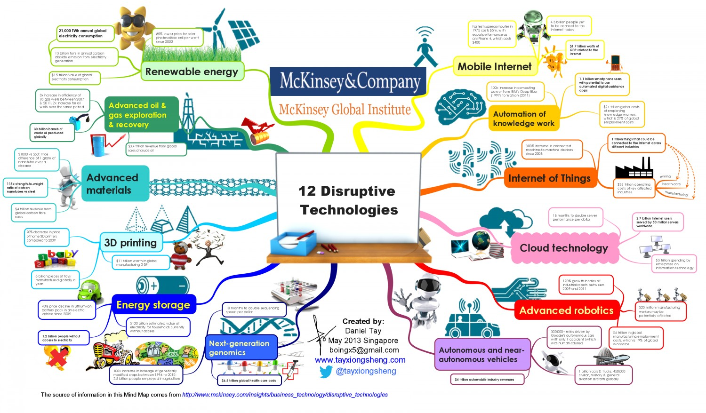

Curso Prospectiva y Vigiliancia Tecnológica
Presentación y Programa
Jaime Andrés García
Instituto Tecnológico Metropolitano
Medellín, 2018
Objetivos (1/3)
Como resultado del curso, el o la estudiante estará en capacidad de:
1. Realizar análisis del contexto general social, político y económico asociado a una investigación de vigilancia tecnológica
2. Desarrollar análisis de investigación a partir de la construcción de
ecuaciones de búsqueda y el análisis de minería de texto
Objetivos (2/3)
3. Desarrollar análisis de patentes a partir de la revisión sistemática
y el uso de técnicas de análisis y visualización de datos
4. Realizar estudios de prospectiva tecnológica aplicando herramientas
de matriz de influencias y análisis morfológico
5. Presentar informes de estudios de prospectiva y vigilancia
tecnológica fáciles de consumir a partir de visualizaciones
de datos e infográficos
Objetivos (3/3)
6. Formular proyectos para el desarrollo de estudios de prospectiva
y vigilancia tecnológica
7. Examinar y evaluar estudios de prospectiva y vigilancia tecnológica
por consultores, empresas, gobiernos, etc.
Contenido del Curso
1. Vigilancia Tecnológica - Análisis de Entorno y Contexto General
2. Vigilancia Tecnológica - Análisis de Investigaciones
3. Vigilancia Tecnológica - Análisis de Patentes
4. Prospectiva Tecnológica
Programación del Curso (1/2)
Clase 1 Presentación del Curso - Análisis de Entorno
Clase 2 Análisis de Entorno - Entrega 1
Workshop Roadmap Class
Clases 3 - 4 Análisis de Investigaciones
Clase 5 Análisis de Investigaciones - Entrega 2
Programación del Curso (2/2)
Clases 6 - 7 Análisis de Patentes
Clase 8 Análisis de Patentes - Entrega 3
Clases 9 - 11 Prospectiva Tecnológica
Clase 12 Prospectiva Tecnológica - Entrega 4 - Exposición
Evaluación del Curso
Análisis del Entorno y Contexto General (20 %)
Análisis de Investigaciones (25 %)
Análisis de Patentes (25 %)
Prospectiva Tecnológica - Exposición (30 %)
Introdución a la Prospectiva y Vigilancia - Descripción de Trabajo
Technology Foresight is systematically attempting
to look in long-term future science, technology,
economy, society to identify strategic areas
and emerging technologies
(Martin, 1995)
Infográficos - Resultados Vigilancia y Prospectiva - Entrega 4
(Tay, 2013)
Infográficos - Resultados Vigilancia y Prospectiva - Entrega 4

(KMPG, 2015)
Infográficos - Resultados Vigilancia y Prospectiva - Entrega 4
(EnvionsingTech, 2012)
Infográficos - Resultados Vigilancia y Prospectiva - Entrega 4
(EnvionsingTech, 2012)
Infográficos - Requisitos y Recomendaciones
Inspiración: http://www.myforesight.my/
1 página - Diseño Libre
Herramientas: PiktoChart, Infogram, Canva
Escenarios (Al menos 4)

(Gausemeier, 1998)
Análisis Morfológico
(Gausemeier, 1998)
Construcción de Escenarios

(Godet, 2018)
Radar de Variables
(Godet, 2018)
Matriz de Influencia

(Godet, 2007)
Lista de Variables (Mínimo 30)

(Godet, 2007)
(Godet - Metodología Prospectiva, 2007)
Vigilancia Tecnológica
Technology Watch consists in systematically capturing, analysing, disseminating
and exploiting useful technical information
for the watch and growth of a company
(Escorsa, 2001)
Análisis de Patentes
Technology Watch consists in systematically capturing, analysing, disseminating
Enviromental Scanning

(Martin, 1995)
Pautas de Evaluación
Pautas Evaluación EntregasPautas Peer Reviews
Pautas Exposición
Bibliografía
Coates, V., Farooque, M., Klavans, R., Lapid, K., Linstone, H. A., Pistorius, C., & Porter, A. L. (2001). On the Future of Technological Forecasting. Technological Forecasting and Social Change, 67(1), 1–17. doi:10.1016/S0040-1625(00)00122-0
Kostoff, R. N., & Schaller, R. R. (2001). Science and technology roadmaps. Engineering Management, IEEE Transactions on, 48(2), 132–143.
Lucheng, H., Xin, L., & Wenguang, L. (2010). Research on emerging technology selection and assessment by technology foresight and fuzzy consistent matrix. foresight, 12(2), 77–89. doi:10.1108/14636681011035762
Martin, B. R. (1995). Foresight in science and technology. Technology Analysis & Strategic Management, 7(2), 139–168.
Bibliografía
The Washington Post. (2009, January 4). The Next Next Things. Retrieved mayo 2, 2012, from http://www.washingtonpost.com/wp-srv/opinions/outlook/nextthings/
Martino, J. P. (2003). A review of selected recent advances in technological forecasting. Technological Forecasting and Social Change, 70(8), 719–733.
Porter, A. L., Cunningham, S. W., Roper, A. T., Banks, J., Mason, T. W., & Rossini, F. A. (2011). Forecasting and Management of Technology. John Wiley & Sons.
Kostoff, R. N., & Schaller, R. R. (2001). Science and technology roadmaps. Engineering Management, IEEE Transactions on, 48(2), 132–143.
Bibliografía
Gausemeier, J., Fink, A., & Schlake, O. (1998). Scenario Management: An Approach to Develop Future Potentials. Technological Forecasting and Social Change, 59(2), 111–130. doi:10.1016/S0040-1625(97)00166-2
Islam, T., & Meade, N. (1997). The diffusion of successive generations of a technology: A more general model. Technological Forecasting and Social Change, 56(1), 49–60. doi:10.1016/S0040-1625(97)00030-9
Phaal, R., Farrukh, C. J. P., & Probert, D. R. (2004). Technology roadmapping—A planning framework for evolution and revolution. Technological Forecasting and Social Change, 71(1–2), 5–26. doi:10.1016/S0040-1625(03)00072-6
Ryu, J., & Byeon, S. C. (2011). Technology level evaluation methodology based on the technology growth curve. Technological Forecasting and Social Change, 78(6), 1049–1059. doi:10.1016/j.techfore.2011.01.003
Shin, T. (1998). Using Delphi for a Long-Range Technology Forecasting, and Assessing Directions of Future R&D Activities The Korean Exercise. Technological Forecasting and Social Change, 58(1–2), 125–154. doi:10.1016/S0040-1625(97)00053-X